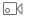
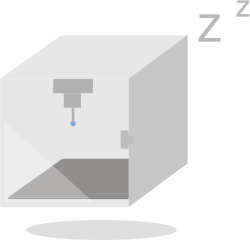
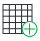
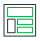
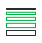
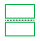
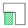
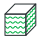
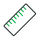

* Benchy
* BenchyRecently Opened
No recently opened files
Online Models
Online model browsing is disabled in this simulation.
MakerLab
Select Prepare above to begin.
Camera

No printer connected
Camera preview is unavailable in this simulation.Printing Progress

N/A
N/ALayer: N/A · Estimated finish time: N/A
Control Printer Parts Print Options Calibration
Nozzle — / — °C
Heatbed — / — °C
Chamber — °C
Fan — %
Y
−XX
−YAMS / Filament
A1
EmptyA2
EmptyA3
EmptyA4
Empty
EmptyA2
EmptyA3
EmptyA4
Empty
SIMULATION · No live printer, temperatures, or camera feed.











Preparing the simulation…
Slicing Result
Color Scheme Line Type
Total: — · Cost: —
Total time: —
No sliced model
Import a model in Prepare, then slice it to inspect its layers here.
Object name: Benchy.stl
Size: 60.001 × 48 × 31.004 mm
Volume: 15550.4 mm³
Triangles: 225154
Size: 60.001 × 48 × 31.004 mm
Volume: 15550.4 mm³
Triangles: 225154